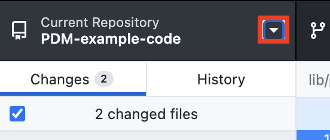
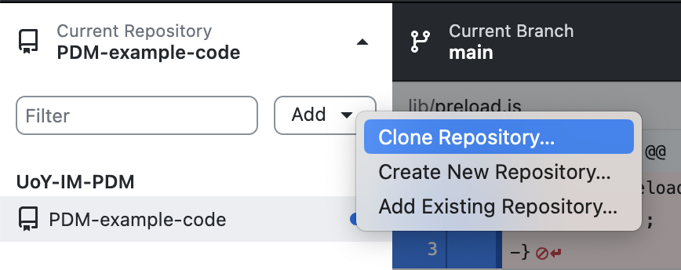
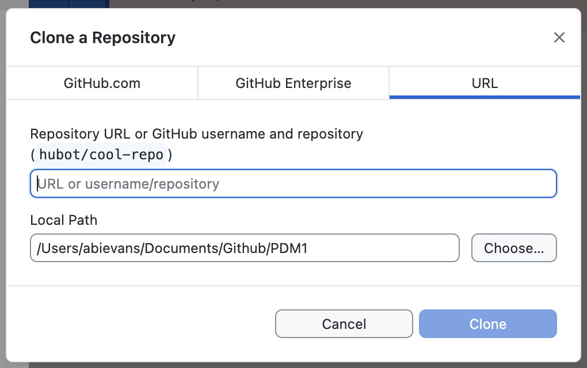

GitHub Desktop is an application for working with GitHub code repositories. Note: If you are already familiar with using GitHub via the command line, feel free to skip these instructions and continue to use the command line.
Key terms:
- Repository (repo for short) - A place to store code files.
- Remote repo - The copy of the repository that lives on GitHub.com.
- Local repo - The copy of the repository that lives on your computer.
- Origin - The location of the remote repository.
- Clone - Make an initial copy (or clone) of a remote repository on your computer.
- Fetch - Fetch changes from the remote repo to your local repo.
- Pull - Integrate fetched changes into your local repo.
- Commit - Save the current state of your local repo. If something goes wrong, you will be able to "roll back" to an earlier commit.
- Push - Push the changes your have committed locally to the remote repo.
- Merge conflict - This occurs when you have changes committed to your local repo that conflict with changes made to the remote repo and GitHub cannot figure out how to resolve the differences. These can be tricky to sort out so ask an instructor for help.
The standard workflow for using GitHub is:
- Clone a remote repo to your computer using GitHub Desktop.
- Using VS Code, make edits to your local repo as needed and make sure to save your changes.
- When you are finished or even just taking a break, use GitHub Desktop to commit your changes then push them to the remote repo.
- Next time you want to work on the repo, use GitHub Desktop to fetch and pull changes from the origin, then start again from step 2.
Set up
- If you are working on a lab computer, GitHub Desktop should already be installed. Find it in Applications and open it. If you are working on your own computer, download and install GitHub Desktop then open it.
- Sign in to GitHub. There are a couple of ways to get to the sign in screen:
- Click on "Clone a Repository from the internet". You will be prompted to sign in.
- OR, find the Settings menu. On Mac, go to the GitHub Desktop menu then click Settings. You will see an option to sign in to your account.
Clone a repository
Some repositories are accessible to anyone who has the URL. Other repositories are private and will only be accessible if you have been given access rights.
If you have been added to the repository (e.g. your practical repos):
- Find the repository in the list on your GitHub Desktop home screen. You may need to click
the refresh icon to search for new repos. If you already have a repo open in GitHub desktop:
- Click the little triangle next to the repository name.
 - Click the Add button then select "Clone Repository".
 - In the popup window, select the first tab, "GitHub.com". Look for the repository name in the list. If you don't see it, click the refresh button to update the list.
- Click the little triangle next to the repository name.
- Click the repository name, then click the "Clone < repo name >" button.
- A form will appear. The first text field shows the URL of the remote repository. Leave this unchanged. Use the "Choose" button by the second text field to pick a folder on your computer. The repository will be downloaded to this folder. If you are working on a lab computer, choose a folder in your filestore. Do not download to the desktop or the computer's Documents or Downloads folders.
- Click the "Clone" button. When the repository is cloned, you will be able to access its contents on your computer.
- Click "Open in Visual Studio Code" to open the repository folder in VS Code.
If you have been given the repository URL (e.g. the example code repo):
- From the GitHub Desktop home screen, click "Clone a Repository from the Internet". OR if you already have a repository open:
- Click the little triangle next to the repository name.
- Click the Add button then select "Clone Repository".
- Click the little triangle next to the repository name.
-
The clone form will appear. Paste the repository URL into the first text field and, in the second text field, select the folder that
you would like to download the repository to.
 - Click the Clone button. When the repository is cloned, you will be able to access its contents on your computer.
- Click "Open in Visual Studio Code" to open the repository folder in VS Code.
Commit and push your work
For any repo that you have write access to, such as your repo for a practical, you should commit your changes and push them to the remote repo--the copy of the repository that lives on GitHub.com. This will back up your code and keep track of different versions. Note that you do not have write access to PDM1-example-code so you cannot push your changes for that repository.
- When you are ready to commit your work, open the repository in GitHub Desktop by selecting it from the list of available repos on the home screen. If another repo is open, click the little triangle next to its name to show the repo list.
- GitHub Desktop will show you a summary of the changes you have made. Take a moment to review the changes and make sure everything looks OK.
- Enter a summary of what you have done in the "Summary" text box. This is known as the commit message. Aim to write one descriptive sentence. If you ever need to undo your changes and go back to an earlier version of your code, you will need to identify the version you want from the commit message. The clearer and more descriptive your commit messages, the easier this will be.
- There is also a "Description" text box. You can leave this blank or use it to provide more information about the changes you are committing.
- Click "Commit to main". The commit process will take a few seconds. On the screen that appears after the commit has finished, click "Push to origin". When the push is complete, you should see that there are no changed files.
Working with the PDM1-example-code repo
The PDM1 example code repo will be frequently updated with new examples. You will need to pull these changes to your computer to be able to see them. If you make edits to any of the code, you will also need to take care not to create a merge conflict or lose your work.
Pull changes
We recommend you do this after every lecture so that you always have the latest code.
- It you haven't already done so, follow the instructions above to clone the PDM-example-code repo.
Use the URL
https://github.com/UoY-PDM1-2425/PDM1-2425-example-code.git. - In GitHub Desktop, select PDM1-example-code. If you have recently cloned the repo, it will likely already be selected. If it is not selected, click the little triangle next to the name of the currently selected repo and find PDM1-example-code in the list of repositories.
- Click the "Fetch origin" button at the top of the GitHub Desktop window. The button will switch to a progress indicator briefly, then it will read "Pull Origin". Click the button again to pull the changes from the remote repository to your computer.
- If you don't see any error messages or warnings, you are done. If you see a message alerting you of a "merge conflict", please let an instructor know and we will help you resolve it.
Editing code
You are free to edit the code in the PDM1-example-code repo. However, we strongly recommend that you make a copy of the code and edit the copy rather than the original code. This will help to avoid merge conflicts. For example, if you want to edit the basicShapes example from lecture 1, copy the example folder (basicShapes) and give it a new name. You can then edit sketch.js in the new folder. You may store the copied code in the repository folder.
Note that you only have read access to the PDM1-example-code repo. This means that you can see all the code in the repo and you can edit it on your own computer but you do not have the ability to push your changes to the remote repository.